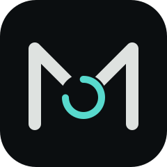
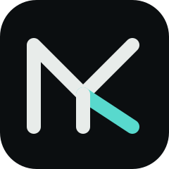

A · Zwei Striche werden ein M — Malin links, Kevin rechts; der Kern (türkis) ist das System.

B · Dasselbe M, der Kern als Score-Ring — die eine Zahl, an der sich alles misst.

C · M und K in einer Form: aus dem M bricht das K (türkis) heraus — zwei Namen, ein Zeichen.D · Das M als Puls-Linie im Ring — Leben und System; ruhigste Variante.